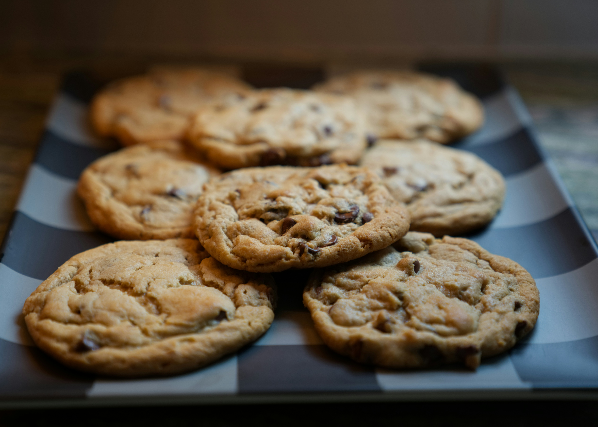

Cookies

How to Make Chocolate Chip Cookies
Follow the step-by-step instructions and detailed ingredient list to create a delicious chocolate chip cookies. Prep time will be around 15 minutes and cook time should take about 10 minutes. So it'll take less than half an hour to have some perfectly warm chocolate chip cookies to snack on.
Ingredients
- 1/2 cup butter
- 1/2 cup shortening
- 3/4 cup packed brown sugar
- 1 egg
- 1 teaspoon vanilla extract
- 1 teaspoon baking soda
- 1/4 teaspoon salt
- 1 1/2 semisweet chocolate chips
- 2 cups all-purpose flour
Directions
- Preheat the oven to 350 degrees F (175 degrees C).
- Combine flour, baking soda, and salt in a large bowl. Beat softened butter, shortening, sugar, brown sugar, and vanilla in another bowl until creamy. Beat in egg, then gradually add flour mixture and mix well. Stir in chocolate chips.
- Combine flour, baking soda, and salt in a large bowl. Beat softened butter, shortening, sugar, brown sugar, and vanilla in another bowl until creamy. Beat in egg, then gradually add flour mixture and mix well. Stir in chocolate chips.